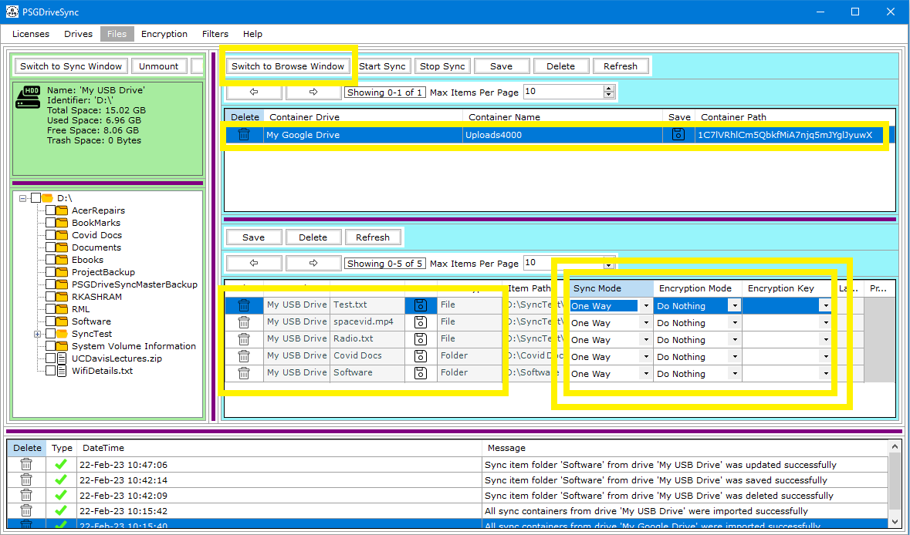
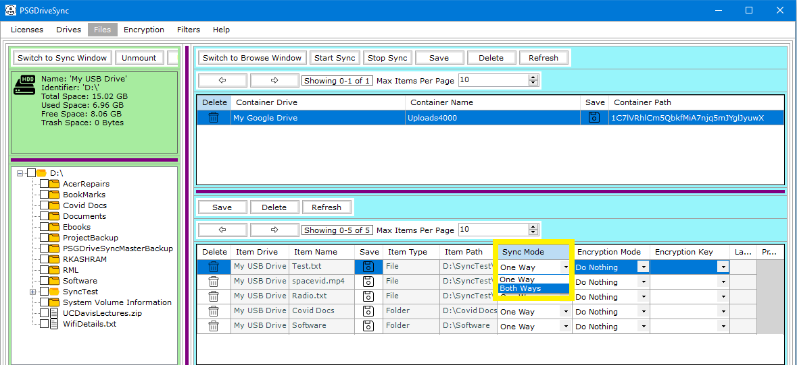
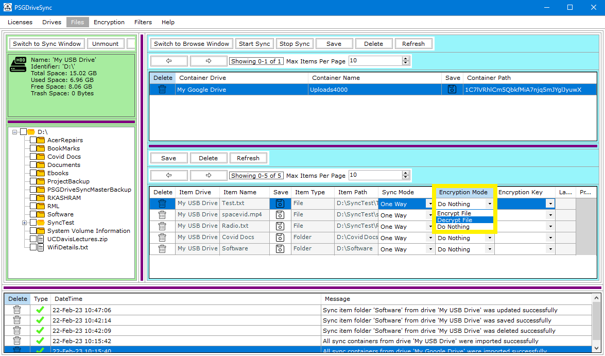
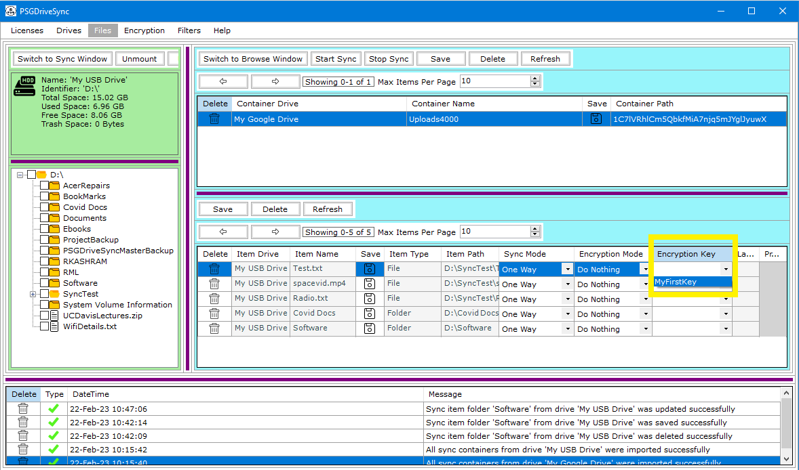
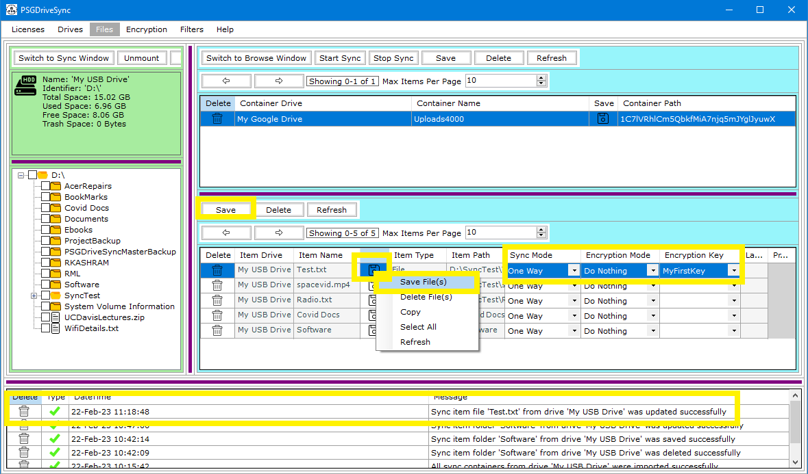

Sync Containers themselves do not have any configurable properties however the Sync Items which are attached to these Sync Containers do have the following configurable properties which can be changed anytime.
|
1 |
Open the Drive in Sync Mode and Select any one of the Sync Containers from the list of Sync Containers. This should also populate all the Sync Items linked to this Sync Container. Select one of the Sync Item which you would like to configure. |
 |
|
2 |
Set the sync mode as either One Way or Both Ways. |
 |
|
3 |
Set the encryption mode as Encrypt, Decrypt or Do Nothing. Encryption mode "Encrypt" and "Decrypt" can only be set in "One Way" sync mode. |
 |
|
4 |
Select one of the encryption keys from the list of encryption keys. Its only required when the encryption mode has been set as "Encrypt" otherwise it can be left blank. |
 |
|
5 |
Save the Sync Item using the "Save" option. The result of the save operation should show in system messages. |
 |